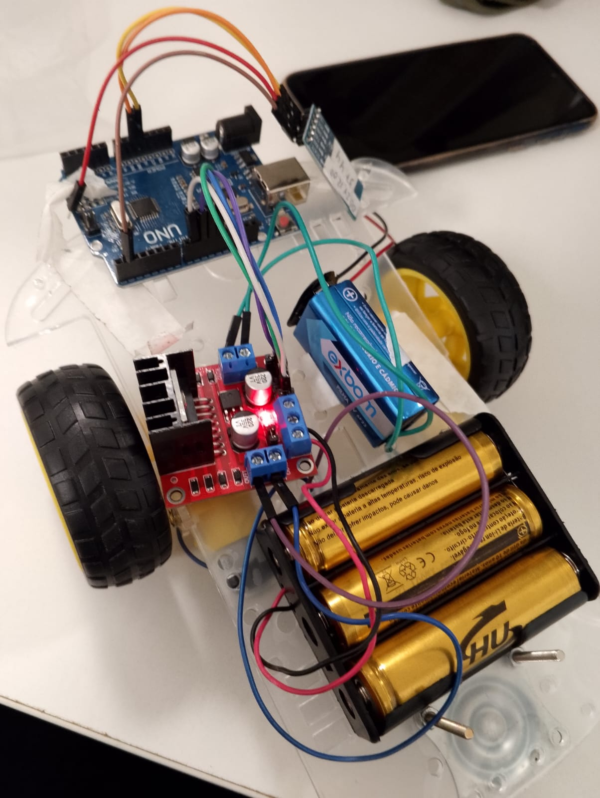

Sobre Mim
Entusiasta de tecnologia com sólida base em suporte técnico e manutenção de sistemas, onde desenvolvi um olhar analítico apurado para a detecção de anomalias e diagnóstico de falhas de rede. Atualmente, foco minha especialização em Cibersegurança, com ênfase em Defesa Cibernética e SOC.
Possuo domínio prático em análise de logs, automação defensiva com Bash Scripting e simulação de adversários (Brute Force). Meu objetivo central é proteger ativos críticos através do monitoramento contínuo e da resposta a incidentes baseada em dados, garantindo a resiliência operacional de infraestruturas.
Currículo
Visualizar CurrículoProjetos em Destaque

Simulação de Brute Force
Detecção e mitigação de ataques SSH.
VER DETALHES
IoT: Robótica via Bluetooth
Desenvolvimento de um rover com Arduino Uno, HC-05 e comunicação Serial via app.
VER DETALHESResposta a Incidentes: Brute Force SSH
Cenário de Ataque
Simulação de ataque de dicionário utilizando Hydra em ambiente controlado.

Detectando o ataque
Identificação de padrões repetitivos de falha de autenticação nos logs do sistema.
A Mitigação (Defesa)
Implementação do Fail2Ban para bloqueio automático do IP atacante.

Habilidades & Competências
Hard Skills
Soft Skills
Certificações & Formação

Formação em Ciência da Computação
FMU | 02/2026 - 12/2029
Linux para Cibersegurança: Shell Scripting, Kali Linux e automação
Abril 2026

IAM: gestão de identidades e acessos em ambientes cloud
Maio 2026
Em andamento